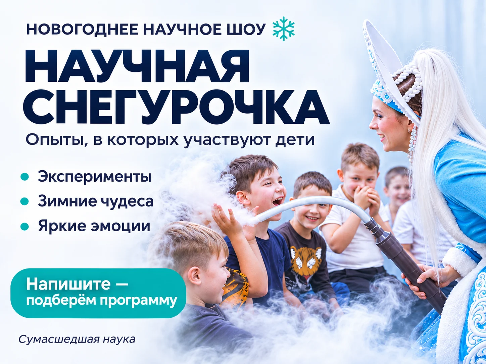

Загадочные ледяные шары
Удивительное превращение на глазах у ребят.

Новый год / Калининград и область
Когда наука встречается с волшебством! Необычная Снегурочка приготовила праздничные опыты, удивительные открытия и сюрпризы. Ребята не просто смотрят шоу — они участвуют в интерактивных заданиях.
12 000 ₽

Часть 1 / Научные чудеса Снегурочки
Удивительное превращение на глазах у ребят.
Зрелищная демонстрация от Научной Снегурочки.
Знакомимся с необычными свойствами снега в праздничной лаборатории.
Узнаём, какие открытия скрываются за привычным символом Нового года.
Яркие демонстрации ведущей, неожиданные эффекты и открытия, которые хочется обсуждать.
Каждый ребёнок получает небольшой подарок на память о празднике.
И это ещё не все сюрпризы! В течение шоу ребята задают вопросы, выдвигают догадки и участвуют в интерактивных заданиях.
Пакет 02 / Полноценный новогодний праздник
Три ярких события — один незабываемый праздник! От первой снежинки до последнего серебряного вихря.
Полная программа «Научная Снегурочка»: удивительные открытия, интерактивные задания и праздничные сюрпризы.
Торжественное появление главного героя Нового года, весёлые игры, шутки и новогодние забавы. Личные поздравления ребят, добрые пожелания, сюрпризы и фотографии с любимыми героями.
Финальная серебряная дискотека под любимые зажигательные хиты: тысячи сверкающих ленточек, танцы и настоящая новогодняя метель.
В стоимость входят: подарок каждому ребёнку, работа Снегурочки, Деда Мороза и помощника, свет и звуковое оборудование.
29 900 ₽
Подарок получает каждый ребёнок; наполнение зависит от количества гостей. Для групп свыше 30 детей условия и доплату обсуждаем индивидуально.
Ваш новогодний праздник
Расскажите о ваших пожеланиях, количестве и возрасте ребят — поможем выбрать подходящую новогоднюю программу.